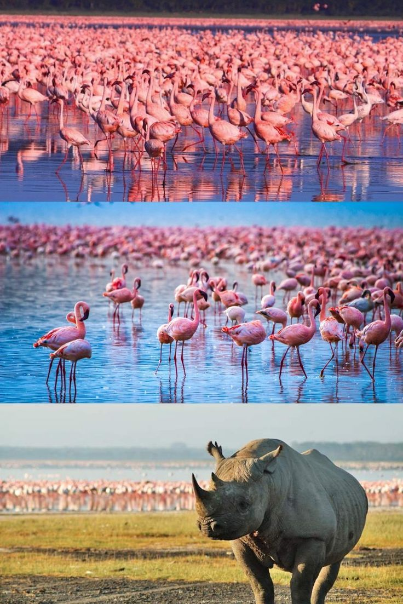
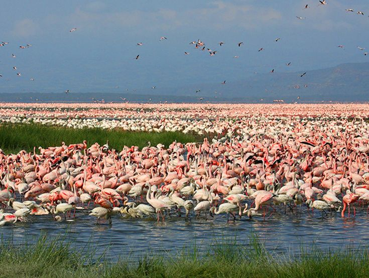
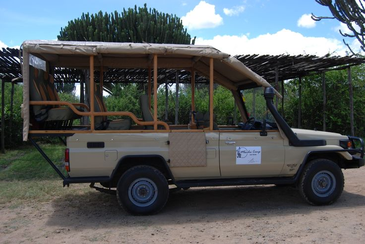

Lake Nakuru
Lake Nakuru is a lake in the Great Rift Valley of Kenya. It is known for its large population of flamingos and other bird species.
Explore Lake NakuruAbout Lake Nakuru
Lake Nakuru is a lake in the Great Rift Valley of Kenya. It is known for its large population of flamingos and other bird species. The lake has a size of 188 km2 (73 sq mi) and is home to over 450 species of birds.
Things to Do in Lake Nakuru
Bird Watching
Lake Nakuru is known for its large population of flamingos and other bird species. Visitors can go bird watching and see a variety of species.
Game Drives
Game drives are a popular activity in Lake Nakuru. Visitors can drive through the park and see a variety of wildlife, including lions, leopards, cheetahs, hyenas, buffalos, giraffes, zebras, wildebeests, and rhinoceros.
Explore Lake Nakuru
Lake Nakuru is a great place for bird watching and wildlife viewing. The lake is home to over 450 species of birds. It is also home to a variety of wildlife, including lions, leopards, cheetahs, hyenas, buffalos, giraffes, zebras, wildebeests, and rhinoceros.
Some popular activities in Lake Nakuru include bird watching and game drives.
Whether you're looking for a relaxing vacation or an adventurous getaway, Lake Nakuru has something for everyone.
Contact kenya
(+254) 798-237947